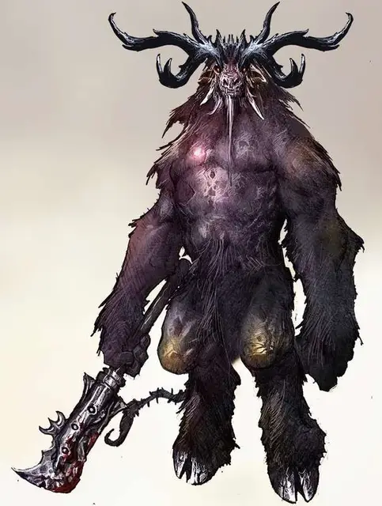

Бафомет
Baphomet
Огромное Исчадие (Демон), хаотично-злое, именной НИП

Класс Доспеха 22 (природный доспех)
Хиты 319 (22к12 + 176)
Скорость 40 футов
| мод | спас | ||
|---|---|---|---|
| СИЛ | 30 | +10 | +10 |
| ЛОВ | 14 | +2 | +9 |
| ТЕЛ | 26 | +8 | +15 |
| мод | спас | ||
|---|---|---|---|
| ИНТ | 18 | +4 | +4 |
| МДР | 24 | +7 | +14 |
| ХАР | 16 | +3 | +3 |
Навыки Восприятие +14, Запугивание +17
Сопротивление урону огонь, холод, электричество
Иммунитет к урону яд; дробящий, колющий, рубящий от немагических атак
Иммунитет к состояниям отравление, очарование, испуг, истощение
Чувства истинное зрение 120 футов, пассивное Восприятие 24
Языки Все, Телепатия 120 фт.
Опасность 23 (50000 опыта)
Бонус мастерства +7
Особенности
Запоминание лабиринта. Бафомет способен в идеале запоминать любой путь, пройденный им, и обладает иммунитетом к заклинанию лабиринт [maze].
Легендарное сопротивление (3/день). Если Бафомет проваливает спасбросок, он может вместо этого сделать спасбросок успешным.
Сопротивление магии. Бафомет совершает с преимуществом спасброски от заклинаний и прочих магических эффектов.
Культ Бафомета. Бафомет преподносит дары физической силы и проворности. Рядовым последователям он дарует способность «Безошибочный следопыт», а лидерам культов – способность «Натравливание охотников». Также все его сторонники получают способность «Отголоски лабиринта».
Отголоски лабиринта. Это существо может вспомнить абсолютно любой пройденный путь.
Безошибочный следопыт. Бонусным действием это существо магическим образом создаёт психическую связь с одним существом, которое оно видит. На следующий час это существо бонусным действием в точности определяет текущее местоположение своей цели и расстояние до неё, если цель находится на том же плане существования. Связь обрывается, если это существо недееспособно или если оно применяет эту способность на другую цель.
Натравливание охотников (перезаряжается после короткого или продолжительного отдыха). Действием это существо позволяет союзникам в пределах 30 футов, у которых есть способность «Безошибочный следопыт», совершить реакцией одну атаку оружием по отмеченной этим союзником цели.
Действия
Мультиатака. Бафомет совершает одну атаку Укусом, одну атаку Рогами и одну атаку Сердцерубом. Он также использует Ужасающее присутствие.
Укус. Рукопашная атака оружием: +17 к попаданию, досягаемость 10 футов, одна цель. Попадание: 19 (2к8 + 10) колющего урона.
Рога. Рукопашная атака оружием: +17 к попаданию, досягаемость 10 футов, одна цель. Попадание: 17 (2к6 + 10) колющего урона. Если Бафомет перемещается по крайней мере 10 футов по прямой линии к цели, а затем попадает по ней своей атакой рогами в этот же ход, цель получает дополнительно 16 (3к10) колющего урона. Если цель является существом, она должна совершить успешный спасбросок Силы Сл 25 или будет отброшена на расстояние до 10 футов и упадет ничком.
Сердцеруб. . Рукопашная атака оружием: +17 к попаданию, досягаемость 15 футов, одна цель. Попадание: 21 (2к10 + 10) урона силовым полем.
Ужасающее присутствие. Каждое существо на выбор Бафомета, находящееся на расстоянии 120 футов от него, и знающее о его присутствии, должно совершить успешный спасбросок Мудрости Сл 18 или станет испуганным на 1 минуту. Напуганное существо может повторять спасбросок в конце каждого своего хода, завершая действие эффекта в случае успеха. Такие повторные спасброски совершаются с помехой, если Бафомет находится в поле зрения существа.
Если существо совершает один из этих спасбросков успешно или если действие эффекта завершается на нем, существо приобретает иммунитет к способности Бафомета Ужасающее присутствие на следующие 24 часа.
Использование заклинаний. Бафомет накладывает одно из следующих заклинаний, используя Харизму в качестве базовой характеристики и без использования материальных компонентов (Сл спасброска от заклинаний 18):
• 3/день каждое: рассеивание магии [dispel magic], подчинение зверя [dominate beast], лабиринт [maze], каменная стена [wall of stone];
• 1/день: телепортация [teleport].
Легендарные действия
Бафомет может совершать 3 легендарных действия, выбирая из указанных ниже вариантов. Лишь одно легендарное действие может быть совершено за раз, и только в конце хода другого существа. Бафомет восстанавливает истраченные действия в начале своего хода.
Атака Сердцерубом. Бафомет совершает одну атаку Сердцерубом.
Атака с разбега (стоит 2 действий). Бафомет перемещается на свою скорость не провоцируя атак, а затем совершает атаку рогами.
Логово
Логово Бафомета – это его дворец, Ликтион, что расположен на слое Бездны, известным под названием Бесконечный лабиринт. Спрятанный посреди извивающихся путей лабиринта, занимающего целый план, Ликтион поддерживается в безукоризненном порядке и окружён рвом, созданным на манер трёхмерного лабиринта. Сам дворец – громадное строение, внутреннее устройство которого так же запутанно, как план, на котором он расположен. Дворец населён минотаврами, гористро и квазитами.
Действия логова
При значении инициативы «20» (проигрыш при ничье), Бафомет может совершить действие в логове, чтобы создать один из следующих магических эффектов; он не может использовать один и тот же эффект два раунда подряд:
• Запечатывание пути. Бафомет запечатывает один дверной проем или любой другой проход в логове. Проход должен быть незанятым. Он заполняется цельным камнем на одну минуту, либо до тех пор, пока Бафомет не создаст этот эффект снова.
• Изменение гравитации. Бафомет выбирает помещение на территории логова, не превышающее ни в одном из габаритов 100 футов. В следующий счёт инициативы 20, гравитация в этой комнате меняется на противоположную. Когда это случается, любые существа и предметы в помещении падают в направлении новой гравитации, если только у них нет способов остаться в воздухе. Бафомет может игнорировать изменение гравитации, если он в помещении, но он любит использовать это действие для того, чтобы, прыгая на потолок, атаковать цели, которые находились высоко под потолком.
• Иллюзорная комната. Бафомет накладывает заклинание таинственный мираж [mirage arcane], которое воздействует на помещение, не превышающее ни в одном из габаритов 100 футов. Действие эффекта заканчивается в следующую очередь инициативы 20.
Местные эффекты
Местность вокруг логова Бафомета окутана его магией, что создаёт один или больше следующих эффектов:
• Лабиринт из живой изгороди. Растительность в пределах мили от логова начинает расти густо и создаёт небольшие лабиринты со стенами из деревьев, кустов и прочей флоры.
• Паникующие звери. Звери в пределах мили от логова напуганы и растеряны, словно они постоянно под угрозой того, что за ними охотятся. Они могут атаковать или впасть в панику, даже если поблизости нет видимой угрозы.
• Соблазнительное Царство. В радиусе 6 миль от логова все проверки Харизмы (Убеждение и Выступление) совершаются с помехой, а все проверки Харизмы (Обман и Запугивание) совершаются с преимуществом.
Если Бафомет умирает, эти эффекты прекращаются в течение 1к10 дней.
Описание
Цивилизация есть слабость, а дикость – сила. Таково кредо Бафомета, Рогатого Короля и Принца Зверей. Он правит минотаврами и прочими существами, в чьих сердцах живёт свирепость. Ему поклоняются те, кто желает вырваться из оков цивилизации и высвободить своего зверя изнутри, ибо Бафомет предрекает мир без ограничений, где существа воплощают в жизнь свои самые дикие желания.
Культы, поклоняющиеся Бафомету, используют лабиринты и сложные узлы в качестве своим эмблем, а также создают для себя секретные убежища наподобие лабиринтов, которые любит их владыка. Испачканные кровью короны и железное либо медное оружие украшают их нечестивые алтари.
Со временем, культисты Бафомета начинают ощущать его влияние. Их глаза наливаются кровью, волосы грубеют и становятся толще. Иногда из лба пробиваются маленькие рога. В определённый момент, преданный культист может полностью превратиться в минотавра, что считается величайшим даром Принца Зверей.
Бафомет выглядит как огромный минотавр с чёрной шерстью. Он обладает ростом в 20 футов (чуть больше 6 метров) и шестью железными рогами. Его красные глаза пылают инфернальным светом. Несмотря на животную жажду крови, которой наполнен Бафомет, он обладает безжалостным и хитрым умом, устремлённым к разрушению цивилизации.
Бафомет вооружён гигантской глефой, что зовётся Сердцеруб. Иногда он отбрасывает это смертоносное оружие в сторону, чтобы насадить врагов на свои рога, втоптать их в землю и разорвать их плоть своими зубами, словно животное.